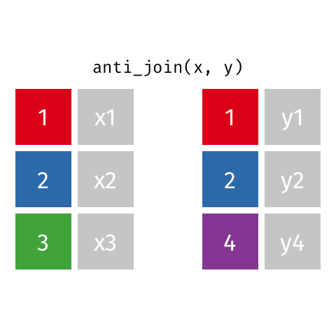

Data Wrangling:
Combining Data
Day 10
Today
More on wrangling:
- Combining datasets
- More practice with
pivot_
Peer programming
- Work on code in a small group (2-3)
- One person does the typing, the others observe and support
- Rules of thumb:
- no typing until your group has discussed a possible approach
- let the typer finish their command/line/pipeline before pointing out any typos
- everybody should contribute ideas and understand the code that is written
- Whoever does the typing will share the completed .Rmd so you all have it
Warm up
- Open the
10-combining.rmdactivity in RStudio - Take a look at the first 3 pairs of data together and talk through (conceptually! in words! no R code!) how you think they should be combined
Example 1: Star Wars Characters
Dataset 1:
starwars_characters# A tibble: 87 × 6
name height mass homeworld species first_film
<chr> <int> <dbl> <chr> <chr> <chr>
1 Luke Skywalker 172 77 Tatooine Human A New Hope
2 C-3PO 167 75 Tatooine Droid A New Hope
3 R2-D2 96 32 Naboo Droid A New Hope
4 Darth Vader 202 136 Tatooine Human A New Hope
5 Leia Organa 150 49 Alderaan Human A New Hope
6 Owen Lars 178 120 Tatooine Human A New Hope
7 Beru Whitesun Lars 165 75 Tatooine Human A New Hope
8 R5-D4 97 32 Tatooine Droid A New Hope
9 Biggs Darklighter 183 84 Tatooine Human A New Hope
10 Obi-Wan Kenobi 182 77 Stewjon Human A New Hope
# ℹ 77 more rowsDataset 2:
starwars_lastjedi# A tibble: 2 × 6
name height mass homeworld species first_film
<chr> <lgl> <lgl> <chr> <chr> <chr>
1 Rose Tico NA NA Otomok Human The Last Jedi
2 Amilyn Holdo NA NA <NA> Human The Last Jedibind_rows()
data_1: our “starting” datadata_2todata_n: additional rows of data that we want to add todata_1
bind_rows(
data_1,
data_2,
...,
data_n
)# A tibble: 10 × 6
name height mass homeworld species first_film
<chr> <int> <dbl> <chr> <chr> <chr>
1 Raymus Antilles 188 79 Alderaan Human A New Hope
2 Sly Moore 178 48 Umbara <NA> Attack of the Clones
3 Tion Medon 206 80 Utapau Pau'an Revenge of the Sith
4 Finn NA NA <NA> Human The Force Awakens
5 Rey NA NA <NA> Human The Force Awakens
6 Poe Dameron NA NA <NA> Human The Force Awakens
7 BB8 NA NA <NA> Droid The Force Awakens
8 Captain Phasma NA NA <NA> Human The Force Awakens
9 Rose Tico NA NA Otomok Human The Last Jedi
10 Amilyn Holdo NA NA <NA> Human The Last Jedi Example 2: Stats Sections
Dataset 1:
stats_sections_fw# A tibble: 8 × 3
class fall winter
<chr> <dbl> <dbl>
1 stat120 3 3
2 stat220 1 1
3 stat230 1 1
4 stat250 0 1
5 stat270 1 0
6 stat285 1 1
7 stat320 0 0
8 stat330 0 1Dataset 2:
stats_sections_s# A tibble: 8 × 1
spring
<dbl>
1 4
2 1
3 1
4 1
5 0
6 1
7 1
8 0bind_cols()
data_1: our “starting” datadata_2todata_n: additional columns of data that we want to add todata_1
bind_cols(
data_1,
data_2,
...,
data_n
)We got lucky
Our second dataset followed this structure:
# A tibble: 8 × 2
class spring
<chr> <dbl>
1 stat120 4
2 stat220 1
3 stat230 1
4 stat250 1
5 stat270 0
6 stat285 1
7 stat320 1
8 stat330 0But it could have also had this structure:
# A tibble: 8 × 2
class spring
<chr> <dbl>
1 stat270 0
2 stat330 0
3 stat220 1
4 stat230 1
5 stat250 1
6 stat285 1
7 stat320 1
8 stat120 4Example 3: Survivor castaways
Dataset 1:
us_castaway_results# A tibble: 870 × 7
castaway_id castaway season_name season place jury finalist
<chr> <chr> <chr> <dbl> <dbl> <lgl> <lgl>
1 US0001 Sonja Survivor: Borneo 1 16 FALSE FALSE
2 US0002 B.B. Survivor: Borneo 1 15 FALSE FALSE
3 US0003 Stacey Survivor: Borneo 1 14 FALSE FALSE
4 US0004 Ramona Survivor: Borneo 1 13 FALSE FALSE
5 US0005 Dirk Survivor: Borneo 1 12 FALSE FALSE
6 US0006 Joel Survivor: Borneo 1 11 FALSE FALSE
7 US0007 Gretchen Survivor: Borneo 1 10 FALSE FALSE
8 US0008 Greg Survivor: Borneo 1 9 TRUE FALSE
9 US0009 Jenna Survivor: Borneo 1 8 TRUE FALSE
10 US0010 Gervase Survivor: Borneo 1 7 TRUE FALSE
# ℹ 860 more rowsDataset 2:
cast_details# A tibble: 1,118 × 6
castaway_id full_name date_of_birth gender occupation personality_type
<chr> <chr> <date> <chr> <chr> <chr>
1 US0014 Rudy Boesch 1928-01-20 Male Retired N… ISTJ
2 US0002 B.B. Andersen 1936-01-18 Male Real Esta… ESTJ
3 US0001 Sonja Christoph… 1937-01-28 Female Musician ENFP
4 US0075 Jake Billingsley 1941-08-21 Male Land Brok… ISFJ
5 US0151 Jim Lynch 1942-01-07 Male Retired F… ISTJ
6 US0474 Joseph Del Campo 1943-07-04 Male Former FB… ISTJ
7 US0304 Jimmy Johnson 1943-07-16 Male Former NF… ESFJ
8 US0047 Kim Johnson 1944-09-18 Female Retired T… ISFJ
9 US0128 Scout Cloud Lee 1944-11-08 Female Rancher INFJ
10 US0061 Paschal English 1945-03-05 Male Judge ISFJ
# ℹ 1,108 more rowsDesired output
# A tibble: 870 × 12
castaway_id castaway season_name season place jury finalist full_name
<chr> <chr> <chr> <dbl> <dbl> <lgl> <lgl> <chr>
1 US0001 Sonja Survivor: Borneo 1 16 FALSE FALSE Sonja Chri…
2 US0002 B.B. Survivor: Borneo 1 15 FALSE FALSE B.B. Ander…
3 US0003 Stacey Survivor: Borneo 1 14 FALSE FALSE Stacey Sti…
4 US0004 Ramona Survivor: Borneo 1 13 FALSE FALSE Ramona Gray
5 US0005 Dirk Survivor: Borneo 1 12 FALSE FALSE Dirk Been
6 US0006 Joel Survivor: Borneo 1 11 FALSE FALSE Joel Klug
7 US0007 Gretchen Survivor: Borneo 1 10 FALSE FALSE Gretchen C…
8 US0008 Greg Survivor: Borneo 1 9 TRUE FALSE Greg Buis
9 US0009 Jenna Survivor: Borneo 1 8 TRUE FALSE Jenna Lewis
10 US0010 Gervase Survivor: Borneo 1 7 TRUE FALSE Gervase Pe…
# ℹ 860 more rows
# ℹ 4 more variables: date_of_birth <date>, gender <chr>, occupation <chr>,
# personality_type <chr>left_join()
# A tibble: 870 × 11
castaway_id castaway season place jury finalist full_name date_of_birth
<chr> <chr> <dbl> <dbl> <lgl> <lgl> <chr> <date>
1 US0001 Sonja 1 16 FALSE FALSE Sonja Christo… 1937-01-28
2 US0002 B.B. 1 15 FALSE FALSE B.B. Andersen 1936-01-18
3 US0003 Stacey 1 14 FALSE FALSE Stacey Stillm… 1972-08-11
4 US0004 Ramona 1 13 FALSE FALSE Ramona Gray 1971-01-20
5 US0005 Dirk 1 12 FALSE FALSE Dirk Been 1976-06-15
6 US0006 Joel 1 11 FALSE FALSE Joel Klug 1972-04-13
7 US0007 Gretchen 1 10 FALSE FALSE Gretchen Cordy 1962-02-07
8 US0008 Greg 1 9 TRUE FALSE Greg Buis 1975-12-31
9 US0009 Jenna 1 8 TRUE FALSE Jenna Lewis 1977-07-16
10 US0010 Gervase 1 7 TRUE FALSE Gervase Peter… 1969-11-02
# ℹ 860 more rows
# ℹ 3 more variables: gender <chr>, occupation <chr>, personality_type <chr>left_join() keeps duplicate rows in x
# A tibble: 4 × 11
castaway_id castaway season place jury finalist full_name date_of_birth
<chr> <chr> <dbl> <dbl> <lgl> <lgl> <chr> <date>
1 US0112 Sandra 7 1 FALSE TRUE Sandra Diaz-Tw… 1974-07-30
2 US0112 Sandra 20 1 FALSE TRUE Sandra Diaz-Tw… 1974-07-30
3 US0112 Sandra 34 15 FALSE FALSE Sandra Diaz-Tw… 1974-07-30
4 US0112 Sandra 40 15 FALSE FALSE Sandra Diaz-Tw… 1974-07-30
# ℹ 3 more variables: gender <chr>, occupation <chr>, personality_type <chr>Other types of _joins
left_join(): all rows from xright_join(): all rows from yfull_join(): all rows from both x and yinner_join(): all rows from x where there are matching values in y, return all combination of multiple matches in the case of multiple matchessemi_join(): all rows from x where there are matching values in y, keeping just columns from xanti_join(): return all rows from x where there are not matching values in y, never duplicate rows of x- …
Setup
For the next few slides…
x# A tibble: 3 × 2
id value_x
<dbl> <chr>
1 1 x1
2 2 x2
3 3 x3 y# A tibble: 3 × 2
id value_y
<dbl> <chr>
1 1 y1
2 2 y2
3 4 y4 left_join()
Keep all rows from x

left_join(x, y, by = "id")# A tibble: 3 × 3
id value_x value_y
<dbl> <chr> <chr>
1 1 x1 y1
2 2 x2 y2
3 3 x3 <NA> full_join()
Keep all rows from both x and y

full_join(x, y)# A tibble: 4 × 3
id value_x value_y
<dbl> <chr> <chr>
1 1 x1 y1
2 2 x2 y2
3 3 x3 <NA>
4 4 <NA> y4 semi_join()
Keep all rows from x where there are matching values in y, keeping just columns from x

semi_join(x, y)# A tibble: 2 × 2
id value_x
<dbl> <chr>
1 1 x1
2 2 x2 Similar to filter()
anti_join()
Keep all rows from x where there are not matching values in y, never duplicate rows of x

anti_join(x, y)# A tibble: 1 × 2
id value_x
<dbl> <chr>
1 3 x3 Similar to filter() with !
*_join() functions
- From dplyr
- Incredibly useful for bringing datasets with common information (e.g., unique identifier) together
- Use
byargument - Always check that the numbers of rows and columns of the result dataset makes sense
- Refer to two-table verbs vignette when needed
keys
In these examples, the colored boxes represent keys
- keys uniquely identify the observation of interest
- Are present in both datasets and used to match the rows
- Depend on the context (e.g. could be castaway ID, could be season ID, could be epiosde number, etc.)
- Can be multiple columns
dplyrwill try to find them automatically, but it’s better to be explicit using thebyargument
Let’s try it: Bakeoff data (again)
On Friday, we tidied data containing ratings from The Great British Bakeoff.
. . .
Before:
# A tibble: 3 × 21
series e1_7day e1_28day e2_7day e2_28day e3_7day e3_28day e4_7day e4_28day
<dbl> <dbl> <dbl> <dbl> <dbl> <dbl> <dbl> <dbl> <dbl>
1 1 2.24 NA 3 NA 3 NA 2.6 NA
2 2 3.1 NA 3.53 NA 3.82 NA 3.6 NA
3 3 3.85 NA 4.6 NA 4.53 NA 4.71 NA
# ℹ 12 more variables: e5_7day <dbl>, e5_28day <dbl>, e6_7day <dbl>,
# e6_28day <dbl>, e7_7day <dbl>, e7_28day <dbl>, e8_7day <dbl>,
# e8_28day <dbl>, e9_7day <dbl>, e9_28day <dbl>, e10_7day <dbl>,
# e10_28day <dbl>. . .
After:
# A tibble: 5 × 4
series episode period viewers
<dbl> <dbl> <dbl> <dbl>
1 1 1 7 2.24
2 1 2 7 3
3 1 3 7 3
4 1 4 7 2.6
5 1 5 7 3.03Let’s try it: Bakeoff data (again)
But that data only had through season 8. We now have a new dataset with seasons 9-14:
# A tibble: 6 × 21
series e1_7day e1_28day e2_7day e2_28day e3_7day e3_28day e4_7day e4_28day
<dbl> <dbl> <dbl> <dbl> <dbl> <dbl> <dbl> <dbl> <dbl>
1 9 9.55 9.92 9.31 9.76 8.91 9.35 8.88 9.41
2 10 9.62 10.0 9.38 9.8 8.94 9.42 8.96 9.49
3 11 11.2 11.8 10.8 11.4 10.7 11.2 10.6 11.2
4 12 9.57 10.2 8.98 9.64 8.69 9.39 8.75 9.13
5 13 8.3 1 7.6 1 7.35 1 7.76 1
6 14 7.84 1 7.54 1 7.28 1 7.12 1
# ℹ 12 more variables: e5_7day <dbl>, e5_28day <dbl>, e6_7day <dbl>,
# e6_28day <dbl>, e7_7day <dbl>, e7_28day <dbl>, e8_7day <dbl>,
# e8_28day <dbl>, e9_7day <dbl>, e9_28day <dbl>, e10_7day <dbl>,
# e10_28day <dbl>. . .
Your task is to join these two datasets together using (1) bind_rows(), (2) _join() and (3) bind_cols() (you’ll also get some pivot_ practice along the way)
Part II: the episodes data
The episodes data has information about each episode of GBBO.
In particular, it includes:
baker: each baker that competed on that episodesignature: the name of the dessert they made for the signature challengetechnical: the place the baker earned in the technical challengeshowstopper: the name of the dessert they made for the showstopper challengeresult: whether the baker was “Safe” or “Eliminated”
episodes# A tibble: 1,007 × 7
series episode baker signature technical showstopper result
<dbl> <dbl> <chr> <chr> <dbl> <chr> <chr>
1 1 1 Annetha Light Jamaican Black C… 2 Red, White… Safe
2 1 1 David Chocolate Orange Cake 3 Black Fore… Safe
3 1 1 Edd Caramel Cinnamon and B… 1 <NA> Safe
4 1 1 Jasminder Fresh Mango and Passio… NA <NA> Safe
5 1 1 Jonathan Carrot Cake with Lime … 9 Three Tier… Safe
6 1 1 Lea Cranberry and Pistachi… 10 Raspberrie… Elimi…
7 1 1 Louise Carrot and Orange Cake NA Never Fail… Safe
8 1 1 Mark Sticky Marmalade Tea L… NA Heart-shap… Elimi…
9 1 1 Miranda Triple Layered Brownie… 8 Three Tier… Safe
10 1 1 Ruth Lemon Drizzle Cakewith… NA Classic Ch… Safe
# ℹ 997 more rowsLet’s try it: Bakeoff data (episodes)
Join the tidy dataset (all 14 seasons) with the episodes data.
Your task is to print the “signature” desserts that were made on the 10 episodes that had the highest 7-day viewership.